| X0 | X1 |
|---|---|
| Surface | Emissivity ε |
| Soil | 0.90 – 0.98 |
| Grass | 0.90 – 0.95 |
| Crops | 0.90 – 0.99 |
| Forests | 0.97 – 0.99 |
| Water | 0.92 – 0.97 |
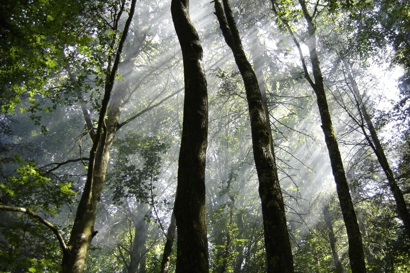
Web-site reading package: T. R. Oke ‘Boundary Layer Climates’, Chapter 1, section 3(a), p. 8 - 13.
NASA / SOHO
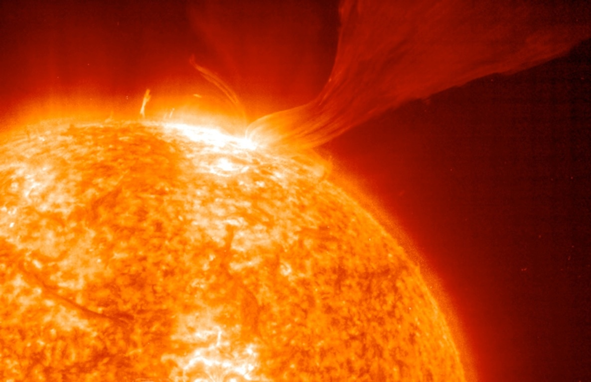
GEOB 204 / APBI 244 students emit radiation!
540 W m-2
Radiation is emitted from all matter
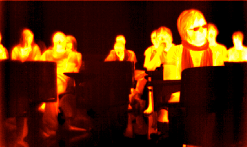
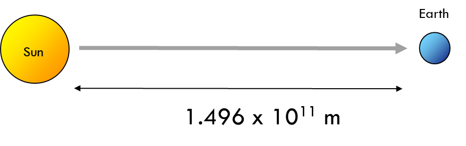
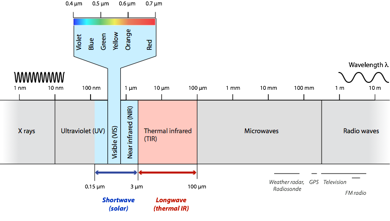
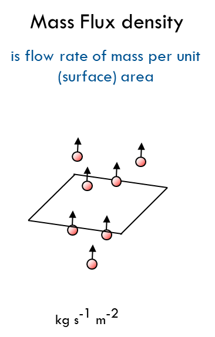
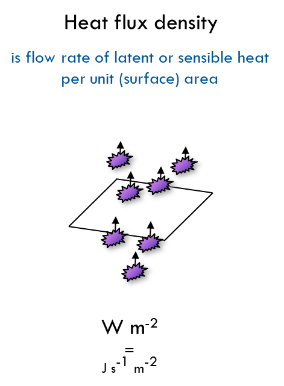
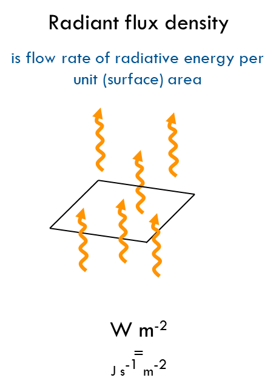
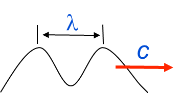
Frequency
Energy of photon e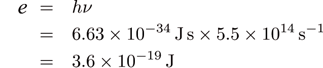
Plants and radiation
b is a constant:
Wien’s displacement law
States that the wavelength of maximum emission from an object* is inversely proportional to its absolute temperature T (in K) of its surface:
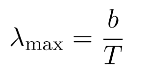
‘Shortwave’ and ‘longwave’ in climatology
At 6000 K: λmax is 0.48 μm (~0.5 μm)
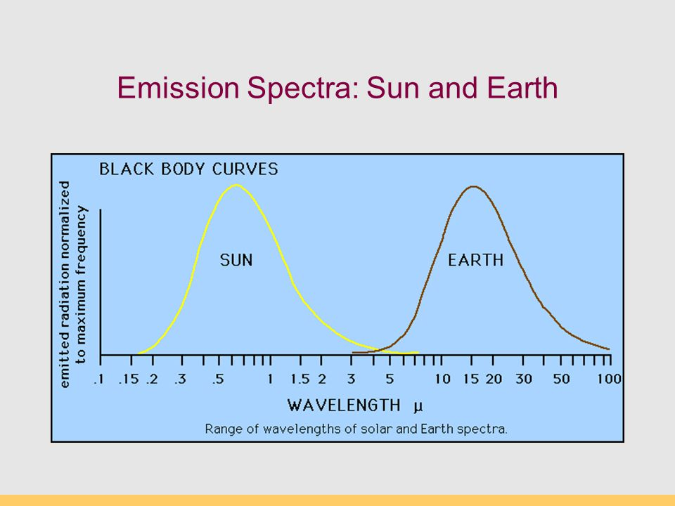
where σ is Stefan’s constant Easy to remember: “5, 6, 7, 8”.
The total energy emitted by a blackbody Eb (emittance) is proportional to fourth power of its absolute Temperature:
where e is their surface emissivity. Emissivity is the ratio of the actual emission to that of a blackbody (i.e. ε = 1.0). Ranges of ε is from 0 to 1). Natural materials (soils, leaves, wood, skin, fur) have values ε > 0.9
Stefan-Boltzmann law: grey body
| X0 | X1 |
|---|---|
| Surface | Emissivity ε |
| Soil | 0.90 – 0.98 |
| Grass | 0.90 – 0.95 |
| Crops | 0.90 – 0.99 |
| Forests | 0.97 – 0.99 |
| Water | 0.92 – 0.97 |
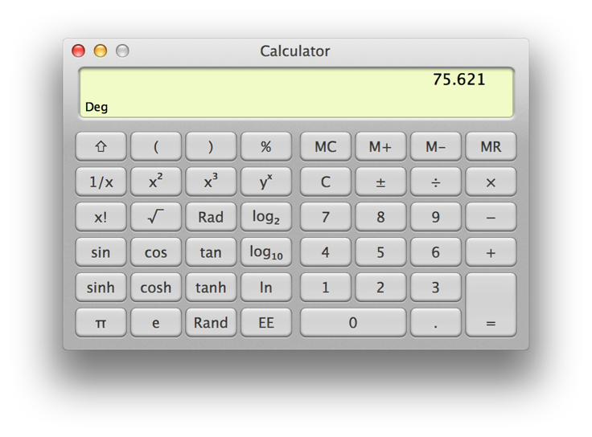
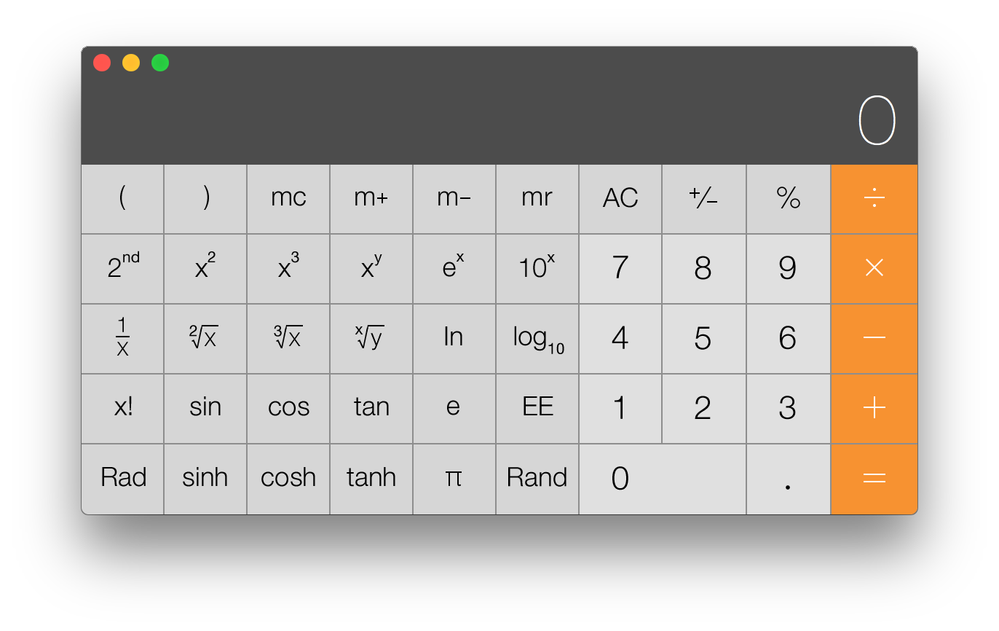
Calculate the emittance (Eg) of your hand. Assume the skin surface emissivity (ε) is 0.95 and skin surface temperature (Ts) is 32°C (305 K). Using the grey body law we have:
Calculate the emittance (Eg) of your hand. Assume the skin surface emissivity (ε) is 0.95 and skin surface temperature (Ts) is 32°C (305 K). Using the grey body law we have:
This law is the the basis of remote sensing in the thermal IR incl. satellite sensors
Stefan-Boltzmann law - applications
An infrared thermometer uses the Stefan-Boltzmann law to measure the surface temperature of objects
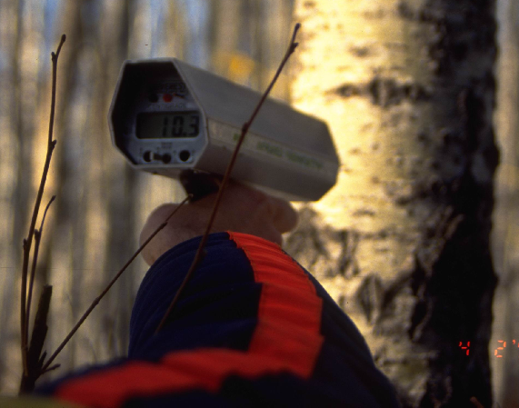
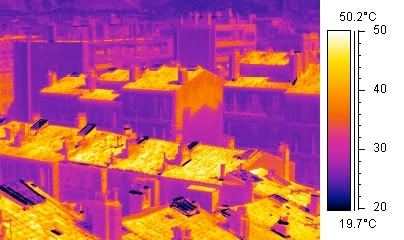
Stefan-Boltzmann law – helping prevent the spread of covid
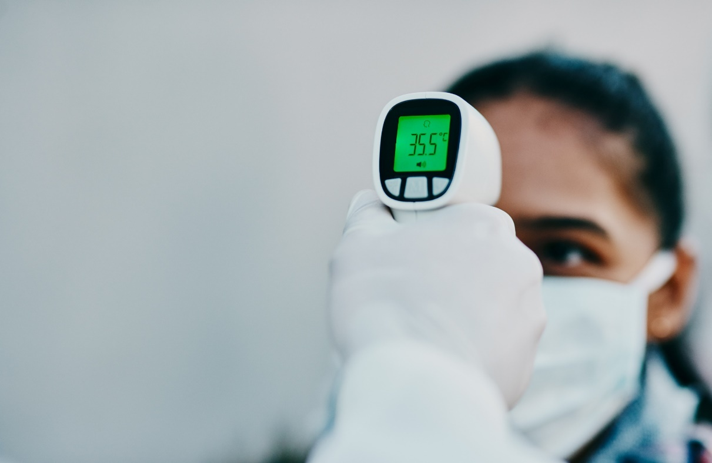